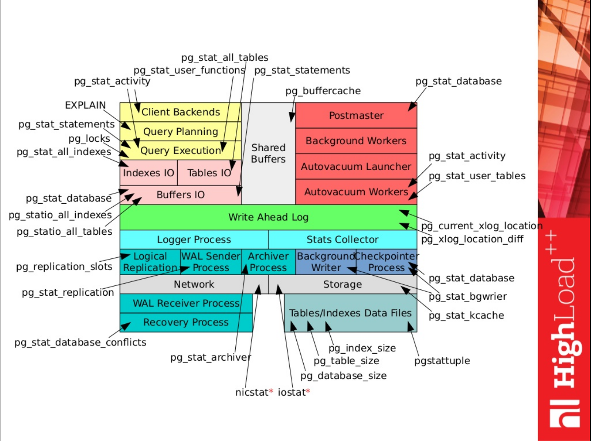

Statistics¶
PostgreSQL provides a lot of statistics without any extension, and some more with some fine extensions.
A very good survey of all available statistics and meaning can be found in these slides.
Extracted fom a slide, here is a schema with all these stats and the area they are related to.

For some general explanations on stats and the meaning of each field, you could read :
Checkpoints¶
What is it ? Some details.
It's a good starting point to be sure checkpoints behave well.
The pg_stat_bgwriter view contains a single row about that activity.
the_db=# select * from pg_stat_bgwriter;
checkpoints_timed | checkpoints_req | checkpoint_write_time | checkpoint_sync_time | buffers_checkpoint | buffers_clean | maxwritten_clean | buffers_backend | buffers_backend_fsync | buffers_alloc | stats_reset
-------------------+-----------------+-----------------------+----------------------+--------------------+---------------+------------------+-----------------+-----------------------+---------------+-------------------------------
84 | 1 | 405618914 | 403083 | 1570508 | 122328215 | 1021398 | 138562615 | 0 | 380478655 | 2018-01-18 09:14:13.970255+01
(1 row)
checkpoints_timedgives the number of checkpoints triggered by the tiemout (GOOD)checkpoints_reqgives the number of checkpoints triggered because thepg_xlogfolder had reached its limitmax_wal_size(BAD)
These specific stats could be resetted by :
select pg_stat_reset_shared('bgwriter');
Average time¶
And the following query
SELECT total_checkpoints, seconds_since_start / total_checkpoints / 60 AS minutes_between_checkpoints FROM (SELECT EXTRACT(EPOCH FROM (now() - stats_reset)) AS seconds_since_start, (checkpoints_timed+checkpoints_req) AS total_checkpoints FROM pg_stat_bgwriter ) AS sub;
gives :
- the total number of checkpoints that occured since last stat reset
- the average time of a checkpoint - should be closed to the
checkpoint_timeoutvalue
Who does the writing ?¶
More complex, the following query is given by (the great) Greg Smith :
SELECT (100 * checkpoints_req) / (checkpoints_timed + checkpoints_req) AS checkpoints_req_pct, pg_size_pretty(buffers_checkpoint * block_size / (checkpoints_timed + checkpoints_req)) AS avg_checkpoint_write, pg_size_pretty(block_size * (buffers_checkpoint + buffers_clean + buffers_backend)) AS total_written, 100 * buffers_checkpoint / (buffers_checkpoint + buffers_clean + buffers_backend) AS checkpoint_write_pct, 100 * buffers_backend / (buffers_checkpoint + buffers_clean + buffers_backend) AS backend_write_pct, 100 * buffers_clean / (buffers_checkpoint + buffers_clean + buffers_backend) AS clean_write_pct, * FROM pg_stat_bgwriter, (SELECT cast(current_setting('block_size') AS integer) AS block_size) bs;
and provides :
- % of checkpoint triggered by size (almost 100% is GOOD)
- How much data the average checkpoint write ?
- Total written by all processes
- % of buffers written by checkpoint process (spread in time : GOOD)
- % of buffers written by backend queries (read from disk because data not in cache / flushed from cache to disk then read again because data is dirty : BAD)
- % of buffers written by clean process (because need some space in cache : BAD)
Checkpoints are the best way to persist data to disk because the I/O are spread on time. To be efficient, other processes (backend / clean) should use the cache most of the time, not the disk.
In addition, pg_bg_writer table also gives maxwritten_clean field that is the number of times the backgroung writer had to stop its writing (cleaning scan) because he has already written more buffers than specified in the bgwriter_lru_maxpages parameter.
Autovacuum¶
First of all, autovacuum activity could be traced with the same results in the pg_stat_user_tables, pg_stat_sys_tables and pg_stat_all_tables views.
For each table created by the user, you could find :
last_vacuum | last_autovacuum | 2008-04-15 11:56:11.622041+02 last_analyze | last_autoanalyze | 2008-04-15 11:56:11.622041+02
for both manual au auto vacuum processes.
Logs are available through the conf parameter log_autovacuum_min_duration to trace long vacuum queries.
Some good metrics to monitor - they are expected to be stable in time :
pg_stat_all_tables.n_dead_tup– number of dead tuples in each table (both user tables and system catalogs)(n_dead_tup / n_live_tup)– ratio of dead/live tuples in each table(pg_class.relpages / pg_class.reltuples)– space “per row”
New view in 9.6 provides information about in-progress vacuums : pg_stat_progress_vacuum.
An extension is available for more stats : pgstattuple.
Tables & index size¶
Tables and index sizes could be get by :
SELECT table_name, pg_size_pretty(pg_table_size(table_name)) AS table_size, pg_size_pretty(pg_indexes_size(table_name)) AS index_size, pg_size_pretty(pg_total_relation_size(table_name)) as total_size FROM ( SELECT ('' || table_schema || '.' || table_name || '') AS table_name FROM information_schema.tables WHERE table_schema='public' ) AS all_tables1 ORDER BY pg_total_relation_size(table_name) desc;
which outputs :
| table_name | table_size | index_size | total_size |
|---|---|---|---|
| public.table1 | 2102 MB | 738 MB | 2840 MB |
| public.table2 | 77 MB | 130 MB | 207 MB |
| public.table3 | 79 MB | 98 MB | 177 MB |
The total for user tables is get by :
SELECT pg_size_pretty(sum(pg_table_size(table_name))) AS table_size, pg_size_pretty(sum(pg_indexes_size(table_name))) AS index_size FROM ( SELECT ('' || table_schema || '.' || table_name || '') AS table_name FROM information_schema.tables WHERE table_schema='public' ) AS all_tables1;
which outputs :
| table_size | index_size |
|---|---|
| 422 GB | 277 GB |
Table Bloating¶
Bloating queries come from there : https://github.com/rach/pome/blob/develop/query.go.
Stats per table¶
Estimate system tables bloat size / ratio with this query :
SELECT schemaname as schema, tblname as table, CASE WHEN (tblpages-est_tblpages_ff)*bs > 0 THEN ((tblpages-est_tblpages_ff)*bs)::bigint ELSE 0 END AS bloat_bytes, CASE WHEN tblpages - est_tblpages_ff > 0 THEN round((100 * (tblpages - est_tblpages_ff)/tblpages::float)::numeric, 1) ELSE 0 END AS bloat_ratio FROM ( SELECT ceil( reltuples / ( (bs-page_hdr)/tpl_size ) ) + ceil( toasttuples / 4 ) AS est_tblpages, ceil( reltuples / ( (bs-page_hdr)*fillfactor/(tpl_size*100) ) ) + ceil( toasttuples / 4 ) AS est_tblpages_ff, tblpages, fillfactor, bs, tblid, schemaname, tblname, heappages, toastpages, is_na FROM ( SELECT ( 4 + tpl_hdr_size + tpl_data_size + (2*ma) - CASE WHEN tpl_hdr_size%ma = 0 THEN ma ELSE tpl_hdr_size%ma END - CASE WHEN ceil(tpl_data_size)::int%ma = 0 THEN ma ELSE ceil(tpl_data_size)::int%ma END ) AS tpl_size, bs - page_hdr AS size_per_block, (heappages + toastpages) AS tblpages, heappages, toastpages, reltuples, toasttuples, bs, page_hdr, tblid, schemaname, tblname, fillfactor, is_na FROM ( SELECT tbl.oid AS tblid, ns.nspname AS schemaname, tbl.relname AS tblname, tbl.reltuples, tbl.relpages AS heappages, coalesce(toast.relpages, 0) AS toastpages, coalesce(toast.reltuples, 0) AS toasttuples, coalesce(substring( array_to_string(tbl.reloptions, ' ') FROM '%fillfactor=#"__#"%' FOR '#')::smallint, 100) AS fillfactor, current_setting('block_size')::numeric AS bs, CASE WHEN version()~'mingw32' OR version()~'64-bit|x86_64|ppc64|ia64|amd64' THEN 8 ELSE 4 END AS ma, 24 AS page_hdr, 23 + CASE WHEN MAX(coalesce(null_frac,0)) > 0 THEN ( 7 + count(*) ) / 8 ELSE 0::int END + CASE WHEN tbl.relhasoids THEN 4 ELSE 0 END AS tpl_hdr_size, sum( (1-coalesce(s.null_frac, 0)) * coalesce(s.avg_width, 1024) ) AS tpl_data_size, bool_or(att.atttypid = 'pg_catalog.name'::regtype) AS is_na FROM pg_attribute AS att JOIN pg_class AS tbl ON att.attrelid = tbl.oid JOIN pg_namespace AS ns ON ns.oid = tbl.relnamespace JOIN pg_stats AS s ON s.schemaname=ns.nspname AND s.tablename = tbl.relname AND s.inherited=false AND s.attname=att.attname LEFT JOIN pg_class AS toast ON tbl.reltoastrelid = toast.oid WHERE att.attnum > 0 AND NOT att.attisdropped AND tbl.relkind = 'r' AND ns.nspname = 'pg_catalog' GROUP BY 1,2,3,4,5,6,7,8,9,10, tbl.relhasoids ORDER BY 2,3 ) AS s ) AS s2 ) AS s3 order by bloat_ratio desc;
For user tables, set the schemaname value with AND ns.nspname='public' and possibly add a relname filter with AND tbl.relname like '%Myfilter%' .
Example of output indicating some bad bloating ratio :
schema | table | bloat_bytes | bloat_ratio ------------+--------------------+-------------+------------- pg_catalog | pg_class | 39116800 | 68.3 pg_catalog | pg_index | 17539072 | 61.8 pg_catalog | pg_depend | 15507456 | 57.2 pg_catalog | pg_type | 15269888 | 56.1 pg_catalog | pg_attribute | 99336192 | 55.6 pg_catalog | pg_constraint | 172032 | 36.2 pg_catalog | pg_shdepend | 598016 | 14.5 pg_catalog | pg_description | 16384 | 5.9
To illustrate Vacuum effect on table bloating :
# Gather bloating stats before vacuum schema | table | bloat_bytes | bloat_ratio ------------+--------------------+-------------+------------- public | my_bloated_table | 128622592 | 68.698315467075 # Then vacuum vacuum (full, analyze) my_bloated_table; # Finally refresh stats schema | table | bloat_bytes | bloat_ratio ------------+--------------------+-------------+------------- public | my_bloated_table | 6520832 | 9.74176967323461
It's much better !
Stats total¶
To get total bloating of all databases of a server, execute :
SELECT pg_size_pretty(SUM(real_size)::bigint) as real_size, pg_size_pretty(SUM(bloat_bytes)::bigint) as bloat_size FROM ( SELECT bs*tblpages AS real_size, CASE WHEN (tblpages-est_tblpages_ff)*bs > 0 THEN ((tblpages-est_tblpages_ff)*bs)::bigint ELSE 0 END AS bloat_bytes FROM ( SELECT ceil( reltuples / ( (bs-page_hdr)/tpl_size ) ) + ceil( toasttuples / 4 ) AS est_tblpages, ceil( reltuples / ( (bs-page_hdr)*fillfactor/(tpl_size*100) ) ) + ceil( toasttuples / 4 ) AS est_tblpages_ff, tblpages, fillfactor, bs, tblid, schemaname, tblname, heappages, toastpages, is_na FROM ( SELECT ( 4 + tpl_hdr_size + tpl_data_size + (2*ma) - CASE WHEN tpl_hdr_size%ma = 0 THEN ma ELSE tpl_hdr_size%ma END - CASE WHEN ceil(tpl_data_size)::int%ma = 0 THEN ma ELSE ceil(tpl_data_size)::int%ma END ) AS tpl_size, bs - page_hdr AS size_per_block, (heappages + toastpages) AS tblpages, heappages, toastpages, reltuples, toasttuples, bs, page_hdr, tblid, schemaname, tblname, fillfactor, is_na FROM ( SELECT tbl.oid AS tblid, ns.nspname AS schemaname, tbl.relname AS tblname, tbl.reltuples, tbl.relpages AS heappages, coalesce(toast.relpages, 0) AS toastpages, coalesce(toast.reltuples, 0) AS toasttuples, coalesce(substring( array_to_string(tbl.reloptions, ' ') FROM '%fillfactor=#"__#"%' FOR '#')::smallint, 100) AS fillfactor, current_setting('block_size')::numeric AS bs, CASE WHEN version()~'mingw32' OR version()~'64-bit|x86_64|ppc64|ia64|amd64' THEN 8 ELSE 4 END AS ma, 24 AS page_hdr, 23 + CASE WHEN MAX(coalesce(null_frac,0)) > 0 THEN ( 7 + count(*) ) / 8 ELSE 0::int END + CASE WHEN tbl.relhasoids THEN 4 ELSE 0 END AS tpl_hdr_size, sum( (1-coalesce(s.null_frac, 0)) * coalesce(s.avg_width, 1024) ) AS tpl_data_size, bool_or(att.atttypid = 'pg_catalog.name'::regtype) AS is_na FROM pg_attribute AS att JOIN pg_class AS tbl ON att.attrelid = tbl.oid JOIN pg_namespace AS ns ON ns.oid = tbl.relnamespace JOIN pg_stats AS s ON s.schemaname=ns.nspname AND s.tablename = tbl.relname AND s.inherited=false AND s.attname=att.attname LEFT JOIN pg_class AS toast ON tbl.reltoastrelid = toast.oid WHERE att.attnum > 0 AND NOT att.attisdropped AND tbl.relkind = 'r' AND ns.nspname = 'pg_catalog' GROUP BY 1,2,3,4,5,6,7,8,9,10, tbl.relhasoids ORDER BY 2,3 ) AS s ) AS s2 ) AS s3 ) as s4;
It outputs for example :
real_size | bloat_size -----------+------------- 310 MB | 179 MB
Index bloating¶
Bloating queries come from there : https://github.com/rach/pome/blob/develop/query.go.
Stats per index¶
Estimate system index bloat size / ratio with this query :
WITH btree_index_atts AS ( SELECT nspname, relname, reltuples, relpages, indrelid, relam, regexp_split_to_table(indkey::text, ' ')::smallint AS attnum, indexrelid as index_oid FROM pg_index JOIN pg_class ON pg_class.oid=pg_index.indexrelid JOIN pg_namespace ON pg_namespace.oid = pg_class.relnamespace JOIN pg_am ON pg_class.relam = pg_am.oid WHERE pg_am.amname = 'btree' AND pg_namespace.nspname = 'pg_catalog' ), index_item_sizes AS ( SELECT i.nspname, i.relname, i.reltuples, i.relpages, i.relam, (quote_ident(s.schemaname) || '.' || quote_ident(s.tablename))::regclass AS starelid, a.attrelid AS table_oid, index_oid, current_setting('block_size')::numeric AS bs, /* MAXALIGN: 4 on 32bits, 8 on 64bits (and mingw32 ?) */ CASE WHEN version() ~ 'mingw32' OR version() ~ '64-bit' THEN 8 ELSE 4 END AS maxalign, 24 AS pagehdr, /* per tuple header: add index_attribute_bm if some cols are null-able */ CASE WHEN max(coalesce(s.null_frac,0)) = 0 THEN 2 ELSE 6 END AS index_tuple_hdr, /* data len: we remove null values save space using it fractionnal part from stats */ sum( (1-coalesce(s.null_frac, 0)) * coalesce(s.avg_width, 2048) ) AS nulldatawidth FROM pg_attribute AS a JOIN pg_stats AS s ON (quote_ident(s.schemaname) || '.' || quote_ident(s.tablename))::regclass=a.attrelid AND s.attname = a.attname JOIN btree_index_atts AS i ON i.indrelid = a.attrelid AND a.attnum = i.attnum WHERE a.attnum > 0 GROUP BY 1, 2, 3, 4, 5, 6, 7, 8, 9 ), index_aligned AS ( SELECT maxalign, bs, nspname, relname AS index_name, reltuples, relpages, relam, table_oid, index_oid, ( 2 + maxalign - CASE /* Add padding to the index tuple header to align on MAXALIGN */ WHEN index_tuple_hdr%maxalign = 0 THEN maxalign ELSE index_tuple_hdr%maxalign END + nulldatawidth + maxalign - CASE /* Add padding to the data to align on MAXALIGN */ WHEN nulldatawidth::integer%maxalign = 0 THEN maxalign ELSE nulldatawidth::integer%maxalign END )::numeric AS nulldatahdrwidth, pagehdr FROM index_item_sizes AS s1 ), otta_calc AS ( SELECT bs, nspname, table_oid, index_oid, index_name, relpages, coalesce( ceil((reltuples*(4+nulldatahdrwidth))/(bs-pagehdr::float)) + CASE WHEN am.amname IN ('hash','btree') THEN 1 ELSE 0 END , 0 -- btree and hash have a metadata reserved block ) AS otta FROM index_aligned AS s2 LEFT JOIN pg_am am ON s2.relam = am.oid ), raw_bloat AS ( SELECT current_database() as dbname, nspname, c.relname AS tablename, index_name, bs*(sub.relpages)::bigint AS totalbytes, CASE WHEN sub.relpages <= otta THEN 0 ELSE bs*(sub.relpages-otta)::bigint END AS wastedbytes, CASE WHEN sub.relpages <= otta THEN 0 ELSE bs*(sub.relpages-otta)::bigint * 100 / (bs*(sub.relpages)::bigint) END AS realbloat, pg_relation_size(sub.table_oid) as table_bytes FROM otta_calc AS sub JOIN pg_class AS c ON c.oid=sub.table_oid ) SELECT nspname AS schema, tablename as table, index_name AS index, wastedbytes as bloat_bytes, round(realbloat, 1) as bloat_ratio, totalbytes as index_size FROM raw_bloat ORDER BY wastedbytes DESC;
For user tables, set the schemaname value with AND pg_namespace.nspname='public' and possibly add a relname filter with WHERE tablename='probes_global_statistics' before the last ORDER BY.
Stats total¶
To get total bloating of all databases of a server, execute :
SELECT pg_size_pretty(SUM(index_size)::bigint) as index_size, pg_size_pretty(SUM(bloat_bytes)::bigint) as bloat_size FROM ( WITH btree_index_atts AS ( SELECT nspname, relname, reltuples, relpages, indrelid, relam, regexp_split_to_table(indkey::text, ' ')::smallint AS attnum, indexrelid as index_oid FROM pg_index JOIN pg_class ON pg_class.oid=pg_index.indexrelid JOIN pg_namespace ON pg_namespace.oid = pg_class.relnamespace JOIN pg_am ON pg_class.relam = pg_am.oid WHERE pg_am.amname = 'btree' AND pg_namespace.nspname = 'pg_catalog' ), index_item_sizes AS ( SELECT i.nspname, i.relname, i.reltuples, i.relpages, i.relam, (quote_ident(s.schemaname) || '.' || quote_ident(s.tablename))::regclass AS starelid, a.attrelid AS table_oid, index_oid, current_setting('block_size')::numeric AS bs, /* MAXALIGN: 4 on 32bits, 8 on 64bits (and mingw32 ?) */ CASE WHEN version() ~ 'mingw32' OR version() ~ '64-bit' THEN 8 ELSE 4 END AS maxalign, 24 AS pagehdr, /* per tuple header: add index_attribute_bm if some cols are null-able */ CASE WHEN max(coalesce(s.null_frac,0)) = 0 THEN 2 ELSE 6 END AS index_tuple_hdr, /* data len: we remove null values save space using it fractionnal part from stats */ sum( (1-coalesce(s.null_frac, 0)) * coalesce(s.avg_width, 2048) ) AS nulldatawidth FROM pg_attribute AS a JOIN pg_stats AS s ON (quote_ident(s.schemaname) || '.' || quote_ident(s.tablename))::regclass=a.attrelid AND s.attname = a.attname JOIN btree_index_atts AS i ON i.indrelid = a.attrelid AND a.attnum = i.attnum WHERE a.attnum > 0 GROUP BY 1, 2, 3, 4, 5, 6, 7, 8, 9 ), index_aligned AS ( SELECT maxalign, bs, nspname, relname AS index_name, reltuples, relpages, relam, table_oid, index_oid, ( 2 + maxalign - CASE /* Add padding to the index tuple header to align on MAXALIGN */ WHEN index_tuple_hdr%maxalign = 0 THEN maxalign ELSE index_tuple_hdr%maxalign END + nulldatawidth + maxalign - CASE /* Add padding to the data to align on MAXALIGN */ WHEN nulldatawidth::integer%maxalign = 0 THEN maxalign ELSE nulldatawidth::integer%maxalign END )::numeric AS nulldatahdrwidth, pagehdr FROM index_item_sizes AS s1 ), otta_calc AS ( SELECT bs, nspname, table_oid, index_oid, index_name, relpages, coalesce( ceil((reltuples*(4+nulldatahdrwidth))/(bs-pagehdr::float)) + CASE WHEN am.amname IN ('hash','btree') THEN 1 ELSE 0 END , 0 -- btree and hash have a metadata reserved block ) AS otta FROM index_aligned AS s2 LEFT JOIN pg_am am ON s2.relam = am.oid ), raw_bloat AS ( SELECT current_database() as dbname, nspname, c.relname AS tablename, index_name, bs*(sub.relpages)::bigint AS totalbytes, CASE WHEN sub.relpages <= otta THEN 0 ELSE bs*(sub.relpages-otta)::bigint END AS wastedbytes, CASE WHEN sub.relpages <= otta THEN 0 ELSE bs*(sub.relpages-otta)::bigint * 100 / (bs*(sub.relpages)::bigint) END AS realbloat, pg_relation_size(sub.table_oid) as table_bytes FROM otta_calc AS sub JOIN pg_class AS c ON c.oid=sub.table_oid ) SELECT wastedbytes as bloat_bytes, totalbytes as index_size FROM raw_bloat ) AS s4;
It outputs for example :
index_size | bloat_size ------------+------------ 283 MB | 199 MB
Cache usage¶
Amount of data read from disk and total for all user tables of a database and their indexes.
WITH stats_heap AS ( SELECT (SELECT sum(heap_blks_read) FROM pg_statio_user_tables)::bigint as heap_read, (SELECT sum(heap_blks_hit) FROM pg_statio_user_tables)::bigint as heap_hit ), stats_idx AS ( SELECT (SELECT sum(idx_blks_read) FROM pg_statio_user_indexes)::bigint as idx_read, (SELECT sum(idx_blks_hit) FROM pg_statio_user_indexes)::bigint as idx_hit ), bs AS ( SELECT cast(current_setting('block_size') AS integer) AS block_size ) SELECT current_database() AS dbname, (heap_read * block_size)::bigint as heap_read, (heap_hit * block_size)::bigint as heap_hit, ((heap_hit::float - heap_read::float) / heap_hit::float)::float as heap_ratio, (idx_read * block_size)::bigint as idx_read, (idx_hit * block_size)::bigint as idx_hit, ((idx_hit::float - idx_read::float) / idx_hit::float)::float as idx_ratio FROM bs, stats_heap, stats_idx;
This query could work for system tables by using the pg_statio_sys_tables table.
Of course, it could be also written to analyze cache usage for a single table :
SET you.table_name = 'report'; WITH stats_heap AS ( SELECT (SELECT heap_blks_read FROM pg_statio_user_tables where relname=current_setting('you.table_name'))::bigint as heap_read, (SELECT heap_blks_hit FROM pg_statio_user_tables where relname=current_setting('you.table_name'))::bigint as heap_hit ), stats_idx AS ( SELECT (SELECT sum(idx_blks_read) FROM pg_statio_user_indexes where relname=current_setting('you.table_name'))::bigint as idx_read, (SELECT sum(idx_blks_hit) FROM pg_statio_user_indexes where relname=current_setting('you.table_name'))::bigint as idx_hit ), bs AS ( SELECT cast(current_setting('block_size') AS integer) AS block_size ) SELECT current_database() AS dbname, (heap_read * block_size)::bigint as heap_read, (heap_hit * block_size)::bigint as heap_hit, CASE WHEN heap_hit != 0 THEN ((heap_hit::float - heap_read::float) / heap_hit::float)::float ELSE 0 END as heap_ratio, (idx_read * block_size)::bigint as idx_read, (idx_hit * block_size)::bigint as idx_hit, CASE WHEN idx_hit != 0 THEN ((idx_hit::float - idx_read::float) / idx_hit::float)::float ELSE 0 END as idx_ratio FROM bs, stats_heap, stats_idx;
Warning
It's rather difficult to know if the right formula for ratio is (heap - hit) / hit or hit / (read + hit).
It depends if we consider that all disk read (read field) put data into the cache (hit field) or not !
Both exists on the Internet.